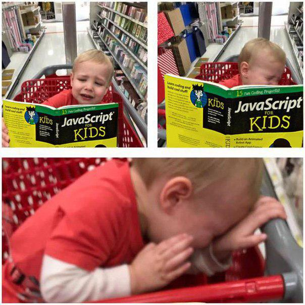
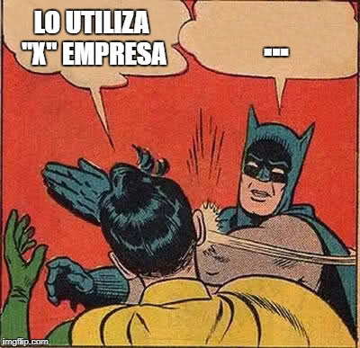
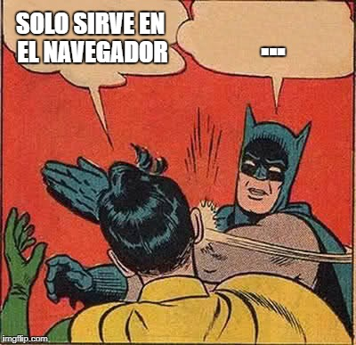
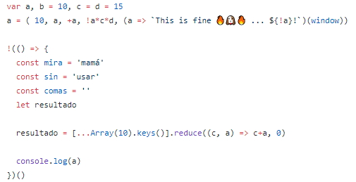

- Lenguaje Interpretado (JIT)
- Débilmente tipado
- Dinámico
- Basado en prototipos
- Front End/Back End
- No es Java
JavaScript
Marco Domínguez

Ingeniero de Software originario de Aguascalientes, Ags. Cuenta experiencia en multiples tecnologías (en su mayoria relacionadas con desarrollo web) como JavaScript (ES5/ES6), CSS 3, HTML 5, jQuery, React, Angular. Marco disfruta ver películas, aprender cosas nuevas y explorar diferentes tecnologías.
¿Que es?
Ventajas

- Fácil de entender
- Front End/Back End
- Comunidad bastante activa (Insights)
- Capaz de unificar un stack de tecnología
- No es Java
Desventajas
- Complicado si se viene de lenguajes de tipificación fuerte
- Inestable
- Bastante cambiante
Open Source
Trends
Front End Frameworks
- React
- Angular
- Vue
- Ember
- Redux
Back End Frameworks
- Express
- Hapi
- Nodemon
Functional Programming
- Ramda
- Lodash
Reactive Programming
- RxJS
Types
- TypeScript
- Flow
Transpiler/Bundler
- Browserify
- Babel
- Rollup
Code Quality
- ESLINT
- JSHINT
Algunos comentarios


